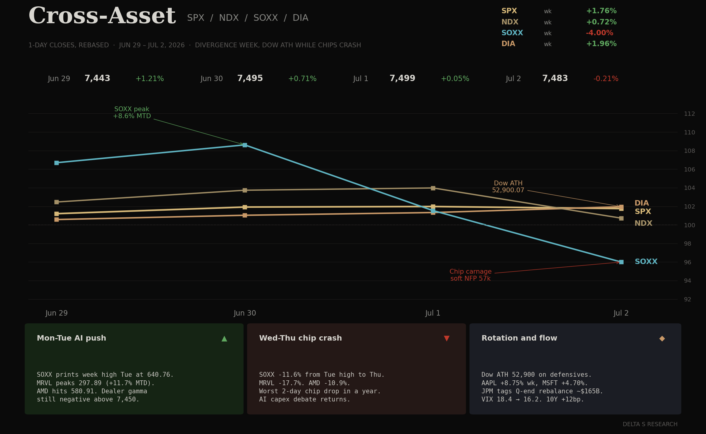
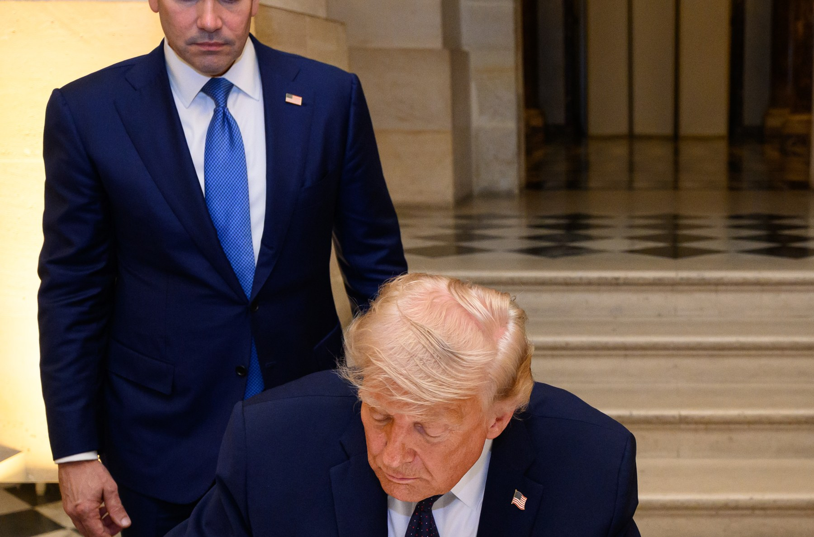
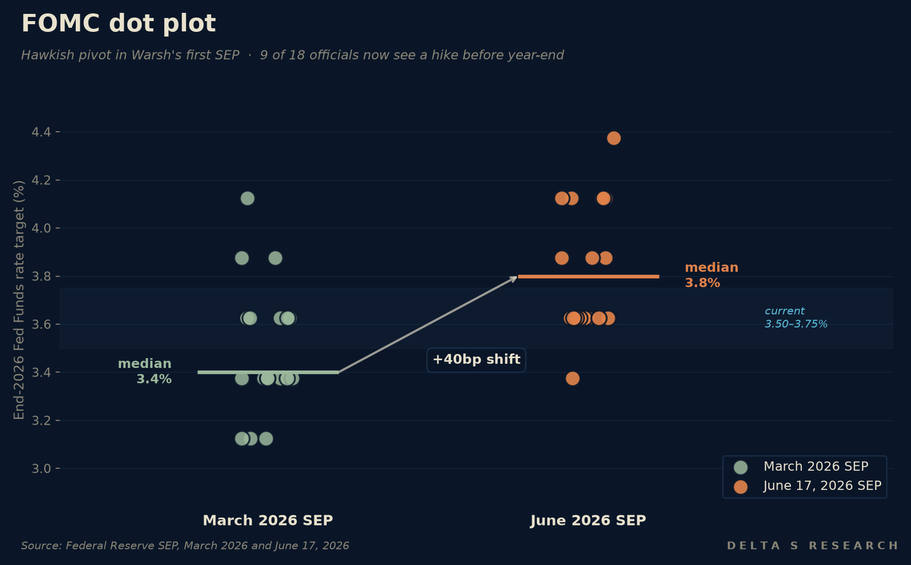

- Tech ran past a hawkish Fed. SPY +0.67% to 746.74, QQQ +2.68% to 740.62, SOXX +7.24% to 639.45, AVGO +7.66%, NVDA +2.68%. The S&P printed a new all-time high Monday (7,554.29) before Wednesday’s FOMC took it back; semis closed at fresh highs anyway.
- FOMC June 17 was the binary, and it broke hawkish. Rates held at 3.50-3.75% (unanimous, since Dec 2025), but the median end-2026 dot moved from 3.4% to 3.8%. Nine of eighteen officials now expect a HIKE before year-end. The statement was cut to ~130 words and the easing bias removed. Markets repriced to a ~60-77% chance of a hike by October.
- Oil cracked on the Islamabad MoU. Vance and Iran’s Ghalibaf signed a 14-point memorandum digitally Jun 14-15; Trump countersigned at Versailles after the G7 on Jun 17, Pezeshkian signed remotely. The Strait of Hormuz reopens, the US naval blockade lifts, $300B reconstruction fund pledged, 60-day ceasefire extension. WTI from ~$85 to ~$76, Brent <$79; USO -8.42% on the week.
- Curve held, dollar capped. 2Y +16bp on FOMC day, 10Y +6bp to 4.49% — bear-flattener, not bear-steepener. TLT +1.14% on the week because the front-end rerate took the long-end with it only on day-one and then unwound. VIX 16.40, down from ~21 the prior Friday.
- May retail sales +0.9% (released Jun 17) confirmed the resilient consumer. Inflation forecast revised up in the SEP, unemployment revised down — Warsh’s first SEP is a soft-landing book with a hawkish front end. The cut-trade is now genuinely dead.
The Week’s Dominant Narrative
- Warsh dropped the easing bias and let the dots do the talking. No own-dot from the chair, but the median moved 40bp in three months — the biggest March-to-June shift since 2022. 3 dots at +25, 5 at +50, 1 at +75, 8 at hold, 1 at cut. The press conference was deliberately thin: Warsh’s “skinny Fed” doctrine traded narrative airtime for dot-plot leverage.
- The Islamabad MoU is the regime change we flagged last week as the tail. Two consecutive weeks of 48-hour Iran round-trips gave way to a structural settlement: ceasefire extension, Hormuz reopens, blockade lifts, $300B reconstruction commitment, Iran reaffirms no nuclear weapons. Pakistan’s Sharif mediated. Switzerland’s formal ceremony Jun 19 was abruptly cancelled — the only loose thread.

- Oil priced the deal before the ink dried. Monday’s -5% gap on the MoU headlines never reversed; USO closed the week -8.42%. The inflation-channel optionality that defined April-May has been substantially de-rated. Energy is no longer the marginal driver of the CPI tape into Q3.
- Tech absorbed the hawkish dots and shrugged. SOXX +7.24%, AVGO +7.66%, QQQ +2.68% in a week where the front-end repriced ~50bp tighter and the chair publicly told markets to expect a hike. The discount-rate hit was real on Wednesday; Thursday’s tape ignored it. The AI-capex bid is not rate-sensitive at the current curve level.
- Retail sales +0.9% sealed the soft-landing book. Stronger than consensus, broad-based, no concentration in autos. Paired with the SEP’s higher inflation / lower unemployment revision, the data fits a Fed that wants to hike, not one that needs to cut. The cut-trade is no longer a recovery story — it is a recession bet.
What Volatility Markets Priced
- VIX faded into the week, not out of it. Closed 16.40, down from ~21 the prior Friday. The two binaries (FOMC + Iran) both resolved before Thursday close, and the vol surface paid back almost all of the bid from the prior two weeks. Vol-of-vol compressed faster than spot: the SPX one-day ATM straddle on Wednesday priced ~75bp; realized was 125bp. That asymmetry is not in the surface anymore.
- Oil vol was the only premium the surface still bid. USO weekly realized was ~3 standard deviations against last Friday’s implied. Hedges bought on the Iran-Israel channel two weeks ago paid into a structural settlement, not a 48-hour binary. The trade was right; the regime change made it bigger than priced.
- Semis paid both directions intraweek, then re-bid into Thursday close. SOXX touched 596 base, dipped on the FOMC, closed at 639 — a 7%+ rally on no fundamental catalyst beyond the absence of a hawkish surprise large enough to break tech. NVDA flat-to-up intra-FOMC, AVGO +7.66% on no idiosyncratic news. Dispersion under the index narrowed week-on-week.

- The 2s-10s flattened ~10bp on FOMC day. 2Y +16bp, 10Y +6bp. Markets read the dot-shift as front-end-only — the long-end didn’t buy the hike narrative. That’s the dovish read inside a hawkish print: the Fed will hike but not many times, and the terminal is still close to where the curve already is.
Cross Asset Signals
- Bonds and stocks both rallied on the week. TLT +1.14%, SPY +0.67%, QQQ +2.68% — a quiet, unusual combination on a hawkish Fed week. The mechanism: the Iran MoU killed the inflation tail, retail sales killed the recession tail, and Warsh’s hike-bias is bounded by the dots not the rhetoric. Multiple expansion came back on Thursday.
- DXY softened despite the dots. Dollar gave back ground as the long-end refused to follow the front-end. Gold flat (+0.15%) — the inflation-hedge bid is no longer paying. With the Iran channel closed and oil collapsing, gold has lost its two cleanest tailwinds.
- Oil is now a fundamental short, not a binary trade. WTI ~$76, Brent <$79. The blockade lift, Hormuz reopen, and 60-day extension remove the geopolitical premium across the entire forward curve, not just spot. OPEC’s December decision is the next live catalyst, and they will be negotiating into a price ~10% lower than a month ago.
- Sector breadth tilted tech and chips, defensives flat. SOXX +7.24%, QQQ +2.68%, IWM +0.90%, DIA +0.48%. The breadth profile of a positioning unwind: short-vol-of-vol funds covered semis into Thursday, large-cap funds added on the FOMC dip. Energy was the only red sector on the week.
- The S&P printed a fresh ATH at 7,554 Monday before giving it back Wednesday. New highs into a hawkish Fed are a positioning tell, not a fundamental one. The Wednesday -1.25% drop was the worst first-Fed-day under a new chair since Greenspan-to-Bernanke wasn’t even a transition (Volcker’s late-1979 hike comp is closer). The Thursday bounce closed the week back near the highs.
Structural Fragilities
- The hike-bias is fragile if growth cracks before October. Nine of eighteen officials expect a hike, but the consensus path requires retail sales to stay above +0.5% MoM, unemployment below 4.4%, and core PCE not to drop below 2.5% on a sustained basis. Any one of those slips and the median dot becomes a meeting-by-meeting fight, not a glide path. Watch the August JOLTS print.
- Warsh’s “skinny Fed” is a communication risk, not a policy risk. Statement halved, press conference 28 minutes (vs Powell’s usual 60+), no own-dot. The message is “the dots speak for me” — but if the data softens, markets will struggle to read a chair who deliberately removed the rhetorical safety valves. The first dovish data print under this doctrine is the test.
- The Iran MoU has a Switzerland-ceremony tail. The June 19 formal signing was abruptly cancelled with no public reason. The MoU itself was signed digitally and the substantive provisions are in force, but the cancelled ceremony is a flag. Watch for any leak on the cancellation — anything that suggests one side wants to renegotiate is the unwind catalyst.
- AI-capex passed the rate-test, but not the funding-cost test. SOXX +7.24% on a week the front-end moved ~50bp tighter — the rate sensitivity is muted because the AI bid is balance-sheet driven, not multiple driven. The vulnerability is corporate spread: if IG widens on hyperscaler issuance, the cost-of-capital channel reasserts.
- Oil at $76 is now the macro hedge, not the macro risk. A 10% leg lower from here forces a CPI revision lower, a curve steepener, and a re-rate of energy equities and high-yield. The forward curve already prices most of this. The cleanest tail is the opposite: an OPEC December surprise cut.
Our Trades This Week
The team executed a series of structural adjustments and standard rollovers this week, heavily leaning into positioning around the LITE volatility crush and re-risking tech/semis post-FOMC:
- LITE (Lumentum Holdings Inc): We capitalized on the post-FOMC implied volatility and structural energy de-rating by recycling our July put options. We closed out an existing 22-day-old put spread, netting a strong premium capture as tech absorbed the hawkish dots and held its ground. We subsequently re-entered a fresh July put spread, positioning for continued upside stability in AI infrastructure names despite sticky front-end rate expectations.
- SNXX (Tradr 2X Long SNDK Daily ETF): Following the 8-for-1 stock split adjustment effective in early June, we locked in risk on the newly adjusted strike ladder. We executed a calendar spread adjustment by selling a July Call and buying a longer-dated December Call, effectively flattening directional near-term exposure while maintaining a cheap structural tail into the back half of the year.
- Rolls (NVTS, CIFR, EOSE, AMPX, LWLG): Routine maintenance of short-dated premium, rolling near-the-money options to maintain theta capture without adding material delta risk to the books.
What We Are Watching Next
- The dot-plot vs the data, week by week. With nine officials calling for a hike before year-end, every CPI, PCE, JOLTS, and NFP print is now a referendum on the median dot. The July CPI release (~Jul 10) and the August JOLTS are the first two stress tests.
- Iran MoU implementation. Strait of Hormuz reopening is a process, not an event — tanker insurance rates, shipping volumes, and naval posture are the live data. Watch for the rescheduling (or non-rescheduling) of the Switzerland ceremony, and for any Knesset or US Senate friction on the $300B fund.
- OPEC December meeting. With Brent <$79 and the geopolitical premium gone, the cartel is negotiating production cuts from a different starting point. A cut announcement before December (Sept-Oct window) would be the next oil binary.
- Hyperscaler debt issuance. Oracle’s 40B debt + 20B equity raise set the template last week. Watch MSFT, GOOGL, META, AMZN issuance calendars into mid-July earnings; widening IG spreads are the first crack in the AI-capex story.
- NVDA late August. SOXX +7.24% this week, +18% over the last two weeks. The setup into the late August Q1 FY27 print is rich. AVGO’s +7.66% this week on no idiosyncratic news is the dispersion tell: single-name leadership returned, but the index is leaning on one print.
- 2s-10s curve into July CPI. 2Y +16bp / 10Y +6bp on FOMC day; the slope flattened ~10bp. If the next CPI confirms the energy de-rate, 10Y can break 4.40% even with the front-end rerate intact — that’s the dovish disinflation setup with hawkish dots.
- The Switzerland ceremony reschedule. A formal signing in Geneva or Bern would lock the MoU; further delay or quiet renegotiation is the unwind path. This is the closest analog to a 48-hour binary that remains on the calendar.